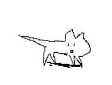

Kohaku
white with red patches along the back. clean edges between the red and white are what breeders look for.

the fish swimming around this site.
move your mouse near one and it swims off. click an empty spot to feed them.
cute, arent they?
white with red patches along the back. clean edges between the red and white are what breeders look for.
a Kohaku with small black spots added on the back. the black stays off the head.
a black koi with red and white on top. the black wraps around the body and reaches onto the head.
all white except for one red circle on the head.
one of the oldest kinds. a pale blue back with a net-like pattern across the scales, and red-orange along the sides and fins.
a black and white koi without scales, whose pattern can change a lot with the seasons and the water.
autumn leaves on water.